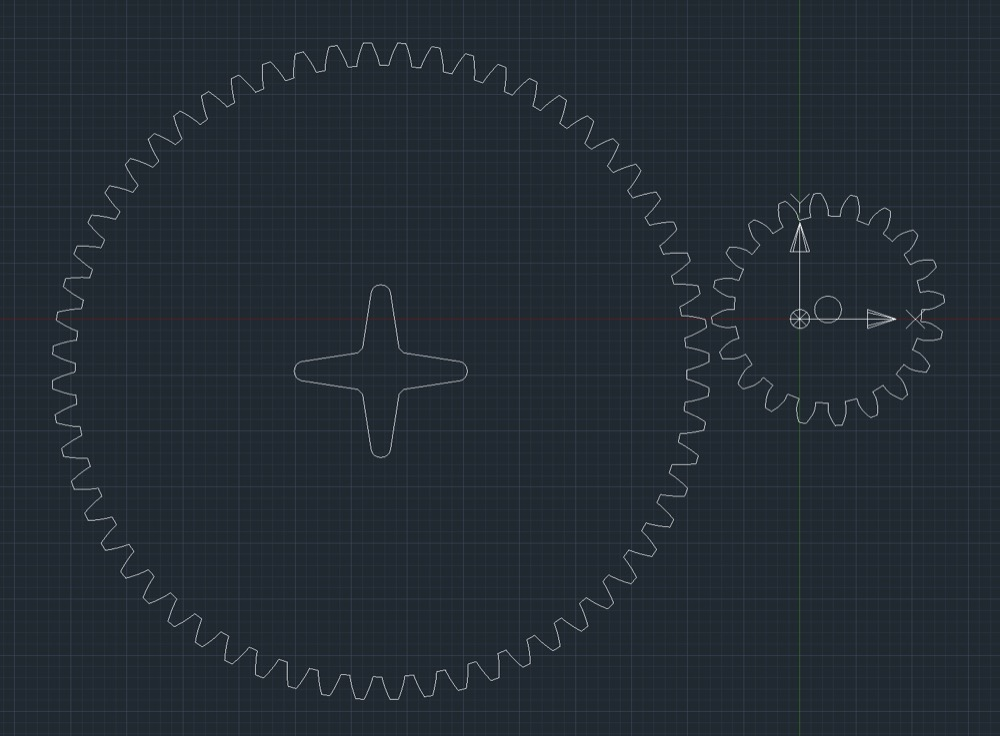
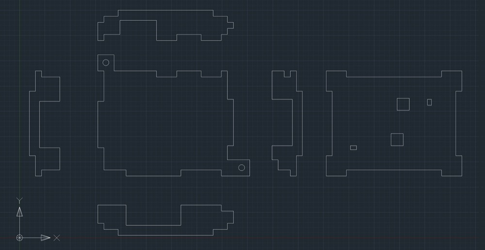

<!DOCTYPE html>
<html lang="en"></html>
<head>
  <meta charset="utf-8">
  <meta content="IE=edge" http-equiv="X-UA-Compatible">
  <meta content="width=device-width, initial-scale=1" name="viewport">
  <title> Rafael Rebolleda — Fab Academy 2020 Documentation</title>
  <!-- Google Fonts-->
  <link rel="stylesheet" href="https://fonts.googleapis.com/css?family=Catamaran&amp;display=swap">
  <link rel="stylesheet" href="../css/main.css">
</head>
<body> 
  <nav>
    <header>
      <ul>
        <li>Rafael Rebolleda</li>
        <li>ESNE (+ LEON)</li>
        <li>Madrid, Spain</li>
      </ul>
      <p class="bio">CX consultant and professor. Single, semi-remote Fab Acadeny student.</p>
    </header>
    <ol>
      <li><a class="red" href="../">About me</a></li>
      <li><a class="blue" href="../FP/">Final Project</a></li>
      <li><a class="blue" href="../DEV/">Project Development</a></li>
    </ol>
    <h1>Assignments</h1>
    <ol> 
      <li><a href="../W1/">Principles & Practices</a></li>
      <li><a href="../W2/">Computer Aided Design</a></li>
      <li><a href="../W3/">Computer Controlled Cutting</a></li>
      <li><a href="../W4/">Electronics Production</a></li>
      <li><a href="../W5/">3D Scan + Printing</a></li>
      <li><a href="../W6/">Electronics Design</a></li>
      <li><a href="../W7/">Computer Controlled Machining</a></li>
      <li><a href="../W8/">Embedded Programming</a></li>
      <li><a href="../W9/">Input Devices      </a></li>
      <li><a href="../W10/">Applications & Implications</a></li>
      <li><a href="../W13/">Intellectual Property</a></li>
    </ol>
  </nav>
  <main>
    <h1>W3: Computer Controlled Cutting</h1>
    <h2>The laser cutter</h2>
    <p>Here's the laser cutter we have on the lab.</p>
    <h2>The Comb</h2>
    <p>Alright... so back to Fusion360 to wrestle parametric design (still complete gibberish to me). First, I created a rough shape by just joining the dots</p>
    <p>In the next step I manually gave them constraints and measures</p>
    <p>Finally, I move all cut dimensions as paramenters that depend on the material depth, in this case 2mm cardboard. In the following table we can see there's one user parameter with name "material" which has a value of "2mm". Below, all the dimensions are specified as multiples or operations over that one "material" variable.</p>
    <p>This is the cutting of two combs to test what's the best fit and underdstand kerf value.</p>
    <p>These are the values I tried</p>
    <p>The best match for this material is at 1,7mm, and measuring the actual cuts, we know the ketf value is 0.2mm</p>
    <h2>A very basic construction kit</h2>
    <p>Now that I have the measure, my goal is to learn:</p>
    <ul>
      <li>How to apply parametric design with the material and machine in mind</li>
      <li>Learn how to use mirroring in CAD</li>
      <li>Learn how to use patterns in CAD</li>
    </ul>
    <p>I modeled two pieces in Fusion360, a simple one and another to be bent. Both use constraints and parameters extensively.</p>
    <p>Next, we need to import that inthe laser cutter software and adjust laser settings:</p>
    <p>Here we can see the actual cutting:</p>
    <video src="cutting.mp4" type="video/mp4" controls="true"></video>
    <p>And this is a very basic assembly of the kit!</p>
    <h2>Final Project Designs</h2>
    <h3>Gears</h3>
    <p>I designed the gears with the <a href="https://geargenerator.com">Gear Generatos</a> tool, which is very convenient to test different sizes and ratios. The files can then be downloaded for further editing, in this case in AutoCAD.</p>
    <p>In AutoCAD, I cleaned the files from some labeling generates by the tool and added the hole to fit the fixture that comes with the servo motor:</p>
    <p>This is a little snapshot of the cutting process:</p>
    <video src="gears_1.mp4" autoplay controls loop></video>
    <p>Gears were made of two layers of 3mm plexiglass, so I joined them by applying chloroform to their surface and then keeping them close together for a few seconds.</p>
    <p>This is an approximate representation of their final placing in the machine:</p>
    <h3>Front control panel</h3>
    <p>This is a relatively simple piece with a few holes to screw it to the machine and to mount the pots, switches and LEDs. I made this in <a href="https://designer.gravit.io/">Gravit Designer</a>, sort of an Illustrator in the cloud.</p>
    <video src="control_panel.mp4" autoplay controls loop></video>
    <p>And this is the final result:</p>
    <h3>Hello Fab Kit box</h3>
    <p>This was designed as a simple box to hold the Hello Fab Kit for final installation. Hence it has couple of tongues to screw onto the machine, access to the pins on the sides, and holes for the LEDs and buttons. It was made in AutoCAD and laser cut in 3mm plexiglass, stuck together by melting with chloroform.</p>
    <video src="hello_fabkit_box_3.mp4" autoplay controls loop></video>
    <h3>Vinyl cutter</h3>
    <p>I used the vinyl cutter to add some decoration to the project, in the form of a big sticker with the Fab logo, which was <a href="https://upload.wikimedia.org/wikipedia/commons/d/d2/Fab_Lab_logo.svg">readily available on Wikipedia</a>div</p>
    <p>I imported it in Illustrator and removed everything but one piece of the logo. The Roland is a bit picky about outline size and coordinates.</p>
    <p>Then I print (cut) the same piece in three different rolls:</p>
    <video src="vinyl_cutting.mp4" autoplay controls loop></video>
    <p>Then it's just about using the transfer paper and glueing it to the wood:</p>
    <h2>Files</h2>
    <ul>
      <li><a href="comb.dxf">Comb</a></li>
      <li><a href="kit.dxf">Construction Kit</a></li>
      <li><a href="../FP/hello_fabkit_case.dxf">Hello Fab Kit Case</a></li>
      <li><a href="../FP/gears.dxf">Gears</a></li>
      <li><a href="../W2/control_panel.svg">Control Panel</a></li>
    </ul>
  </main>
  <footer>
    <hr>
    <p><a rel="license" href="http://creativecommons.org/licenses/by-nc/4.0/"></a><br />This work is licensed under a <a rel="license" href="http://creativecommons.org/licenses/by-nc/4.0/">Creative Commons Attribution-NonCommercial 4.0 International License</a>.</p>
  </footer>
</body>